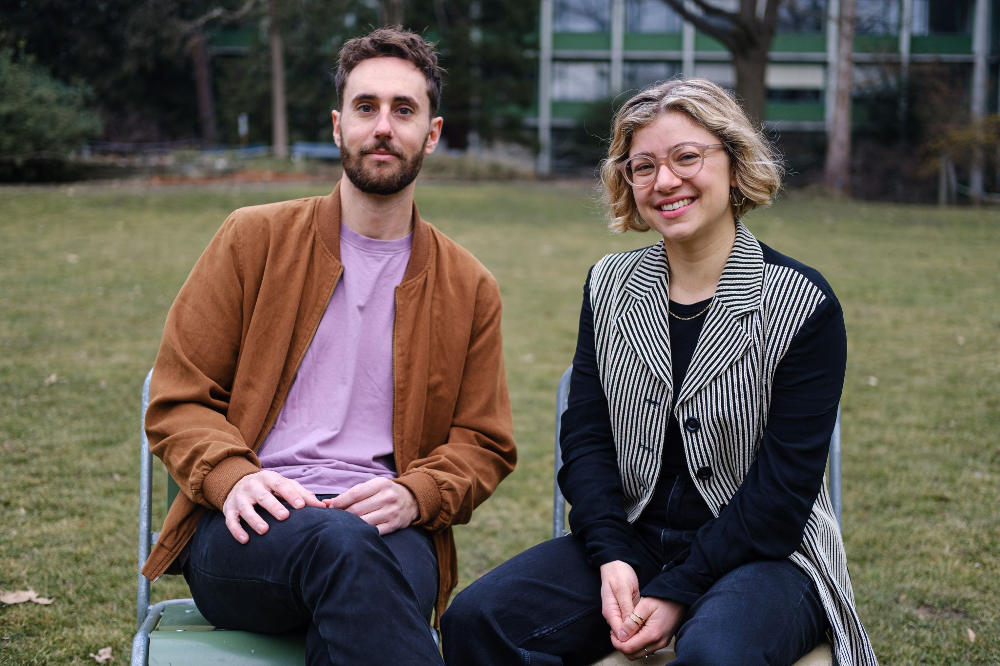
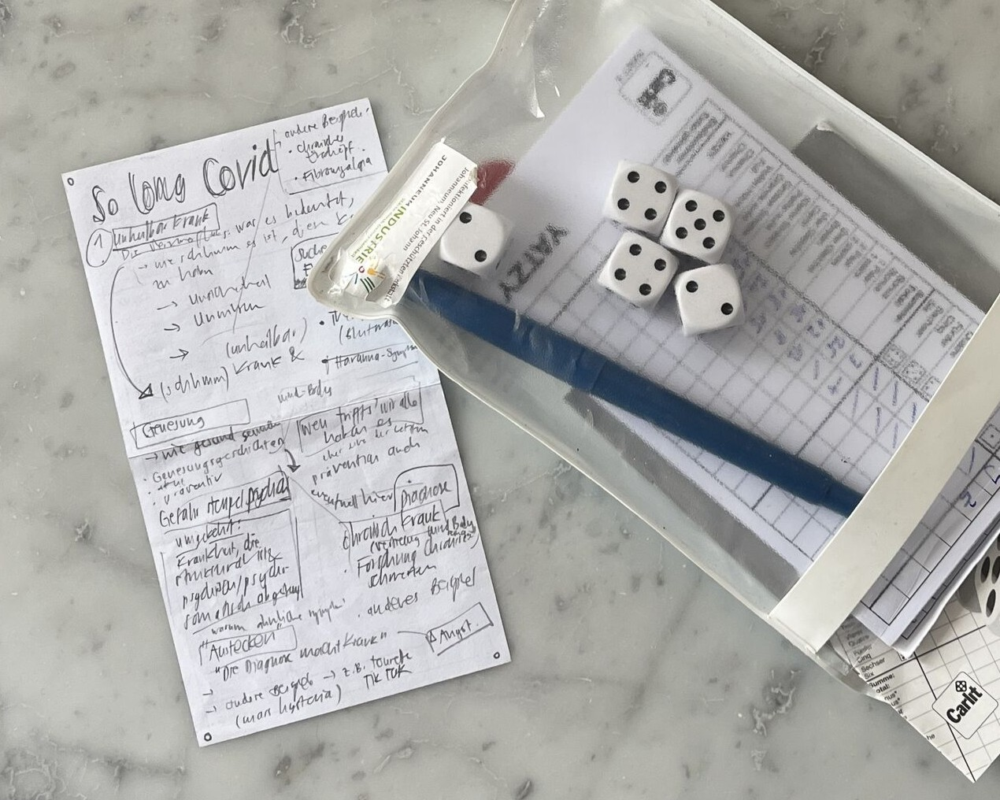
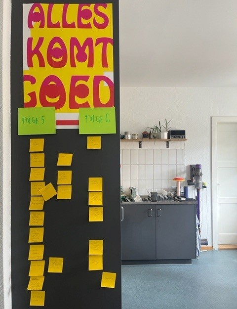
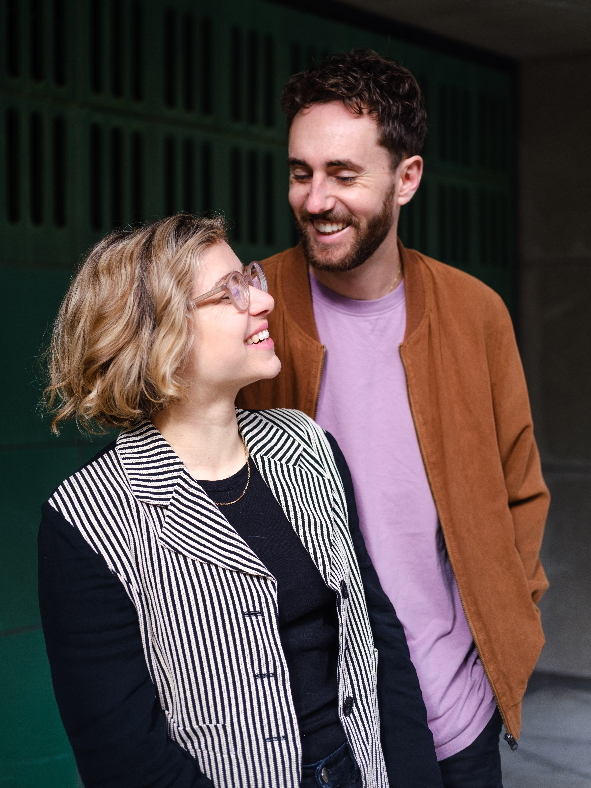

Hintergründe zum Podcast SO LONG COVID

SO LONG COVID ist ein unabhängiges Rechercheprojekt
von Zita Bauer und Jann Zosso
ÜBER DEN PODCAST
Die Covid-Pandemie ist vorbei, das Leben geht normal weiter - aber nicht für alle. Jann, Jasna, Marlen und Patricia gehören zu den schätzungsweise 300'000 Menschen in der Schweiz mit Long Covid. Fatigue, Belastungsintoleranz, Muskelschmerzen und kognitive Störungen schränken ihren Alltag massiv ein, bislang gilt die Krankheit als unheilbar.
Und doch gibt es Menschen, die vollständig genesen - auch Jann, Jasna, Marlen und Patricia. Was können wir von ihnen lernen? Ist die Situation für Betroffene tatsächlich so aussichtslos, wie sie scheint? Jann, Jasna, Marlen und Patricia sind nicht zufällig genesen, sondern auf Grundlage eines neuen Krankheitsverständnisses.
In dieser Podcast-Serie beleuchten wir Erkenntnisse aus der modernen Schmerztherapie und Neurobiologie, die auch andere bislang medizinisch unerklärte Erkrankungen wie chronische Rückenschmerzen, Migräne oder Reizdarm betreffen. Diese neuen Ansätze lindern nicht mehr nur die Symptome, sondern eröffnen neue Perspektiven - bis hin zu einer vollständigen Heilung. Doch warum verbreiten sich diese Ansätze nur langsam? Und was bedeutet dieses neue Wissen für die Medizin der Zukunft?
WIE ALLES BEGANN

Jann war selbst von Long Covid betroffen und ist mithilfe eines neuen Krankheitsverständnisses und daraus abgeleiteter Therapieansätze wieder genesen. Da wir diese Ressourcen damals eher zufällig entdeckt hatten und sie mehrheitlich auf Englisch verfügbar waren, wollten wir dazu beitragen, dieses Wissen für mehr Menschen zugänglich zu machen. Auf einer Velotour im Spätsommer 2024 in der Bretagne, als Jann auf bestem Weg war, seine Long-Covid- Erkrankung vollständig zu überwinden, hörten wir den Story-Telling-Podcast Hysterical von Dan Taberski. Wir waren begeistert! Ein brisantes Thema so packend erzählt, hautnah an den Protagonist:innen und mit eingängiger Musik, die uns immer wieder positiv erschaudern liess. Leicht grössenwahnsinnig, war uns klar: Wir wollen unsere Geschichte so erzählen. Auf einen Yatzy-Zettel kritzelten wir in diesen Ferien einen ersten Entwurf.

Es folgte eine intensive Phase der Recherche: Wir führten zahlreiche Gespräche mit Betroffenen, Ärzt:innen, Therapeut:innen und Forschenden. Parallel dazu begannen wir, unser gesammeltes Wissen zu teilen und andere Betroffene zu unterstützen, zunächst im privaten Umfeld, später zunehmend auch darüber hinaus. Immer wieder meldeten sich Menschen bei uns, die erfahren hatten, dass Jann wieder gesund geworden war. Jann begann, seine persönliche Genesungsgeschichte als Erfahrungsbericht aufzuschreiben und erhielt darauf viele berührende Rückmeldungen-am schönsten natürlich von Menschen, die mit diesem neuen Wissen nun ebenfalls genesen konnten.
Gleichzeitig wurde uns die Tragweite dieses neuen
Krankheitsverständnisses immer mehr bewusst. Es betrifft nicht nur
Long Covid, sondern auch viele andere chronische Erkrankungen, die
bislang als unheilbar galten. Jann konnte mit den gleichen Techniken
der Symptom-Neuverarbeitung auch seine chronischen Nackenschmerzen
loswerden, an denen über Jahre hinweg unzählige Physiotherapeutinnen
und Osteopathen scheiterten. Das Gleiche gilt für seine
wiederkehrenden Magenbeschwerden, die sich weder durch die Befunde
von Magenspiegelungen erklären, noch durch Ernährungsberatung und
ergänzende Lebensmittel lindern liessen. Und auch das
Restless-Legs-Syndrom, für welches Jann mitgeteilt wurde,
 dass es keine Heilung gibt und sich die Beschwerden mit dem Alter
eher verschlimmern werden, ist mittlerweile kein Thema mehr. Anders
in unserem Umfeld: Wir kennen so viele Menschen, die an chronischen
Rückenschmerzen, chronischen Blasenentzündungen (Interstitielle
Zystitis), Migräne, Fibromyalgie und weiteren Beschwerden ohne klare
strukturelle Ursache leiden. Von vielen weiteren haben wir während
unserer Arbeit am Podcast erfahren. Und gleichzeitig lernten wir
viele Menschen kennen, die mit den gleichen Techniken ihre
chronischen Beschwerden deutlich lindern oder sogar vollständig
loswerden konnten. Diese Geschichten ähneln sich meistens stark:
Nach einer langen Odyssee durch das Gesundheitssystem, mit
unzähligen Therapieversuchen und zunehmender Verzweiflung, entdecken
sie eher durch Zufall dieses neue Wissen.
dass es keine Heilung gibt und sich die Beschwerden mit dem Alter
eher verschlimmern werden, ist mittlerweile kein Thema mehr. Anders
in unserem Umfeld: Wir kennen so viele Menschen, die an chronischen
Rückenschmerzen, chronischen Blasenentzündungen (Interstitielle
Zystitis), Migräne, Fibromyalgie und weiteren Beschwerden ohne klare
strukturelle Ursache leiden. Von vielen weiteren haben wir während
unserer Arbeit am Podcast erfahren. Und gleichzeitig lernten wir
viele Menschen kennen, die mit den gleichen Techniken ihre
chronischen Beschwerden deutlich lindern oder sogar vollständig
loswerden konnten. Diese Geschichten ähneln sich meistens stark:
Nach einer langen Odyssee durch das Gesundheitssystem, mit
unzähligen Therapieversuchen und zunehmender Verzweiflung, entdecken
sie eher durch Zufall dieses neue Wissen.
Auch die Ärzt:innen in unserem Umfeld waren interessiert an Janns Genesungsgeschichte und dem neuroplastischen Ansatz. Viele haben selber Patient:innen mit Long Covid oder anderen chronischen Erkrankungen und erfahren die Hilflosigkeit und Ratlosigkeit aus erster Hand. Das neuroplastische Verständnis von chronifizierten Symptomen stellt in diesem Zusammenhang einen grundlegenden Perspektivenwechsel dar. Jann nahm auch Kontakt mit der Klinik Gais auf, die er während seiner Long-Covid-Erkrankung besucht hatte, und teilt nun dort seine Erfahrungen mit Betroffenen. Gleichzeitig erfuhren wir, dass das Universitätsspital Basel in diesem Bereich Pionierarbeit leistet: Basierend auf dem neuroplastischen Ansatz arbeitet ein interdisziplinäres Team ganzheitlich mit Patient:innen, nicht nur im Kontext von Long Covid, sondern auch bei anderen persistierenden Beschwerden. Janns Genesungsbericht wird dort regelmässig an Patient:innen weitergegeben.

All diese Erfahrungen flossen in dieses Podcast-Projekt, mit welchem wir diese unglaublichen Genesungsgeschichten und diese kleine Revolution in der Medizin hörbar machen wollen. Nahbar und hoffentlich mit vielen Gänsehaut-Momenten, und gleichzeitg präzise und hilfreich. Ein Projekt, das sich von der Idee auf dem Yatzy-Zettel zu einem Vollzeitjob für Zita und einem wachsenden Team entwickelt hat. SO LONG COVID wuchs zu einem mehrjährigen, unabhängigen Recherche-Podcast mit eigens dafür komponierter Musik, eigener visueller Identität und Webpräsenz sowie professionellem Sounddesign, Beratung und Kommunikation. Es ist ein Herzensprojekt, das wir mit viel Leidenschaft und Engagement verfolgen. Denn wir sind überzeugt: Diese Geschichten und dieses Wissen verdienen es, erzählt zu werden.
WARUM ES WICHTIG IST
Medien und Fachpersonen berichten weitgehend einseitig über Long Covid: Im Fokus stehen bleibende Schäden, mögliche dauerhafte Einschränkungen und schwere Schicksale. Es ist wichtig, auf die belastenden Lebensrealitäten Betroffener und bestehende Versorgungslücken hinzuweisen sowie den Handlungsbedarf aufzuzeigen.
Gleichzeitig gibt es vermehrt Menschen, die auch nach sehr schwerwiegenden Krankheitsverläufen wieder genesen. Mit dieser Podcast-Serie erweitern wir den aktuellen Diskurs und erzählen die Geschichten von Menschen, die aufgrund eines neuen Erklärungsansatzes die Krankheit vollständig überwinden konnten. Dabei tauchen wir ein in faszinierende Erkenntnisse aus der Neurobiologie und neuestes Wissen aus der modernen Schmerztherapie.
Wir wollen diese vielversprechenden Ansätze sichtbar machen, denn in der Komplexität der Krankheit erreichen sie Betroffene, ihr Umfeld, aber auch Ärzt:innen und medizinisches Personal nur teilweise. Und wir wissen aus Forschung und eigener Erfahrung, dass ein mehrheitlich negatives Narrativ eine Genesung von Betroffenen massgeblich erschweren kann.
Die Relevanz wird duch die grosse Anzahl Betroffener erhöht. Nicht nur der vielen Menschen die in der Schweiz mit Long Covid leben, sondern auch die schätzungsweise 1.5 Millionen Menschen mit chronischen Schmerzen, die "Volkskrankheit Nr. 1" in unserer auf Leistung und Produktivität ausgerichteten Gesellschaft. Mit dem neuroplastischen Ansatz eröffnen sich neue Perspektiven.